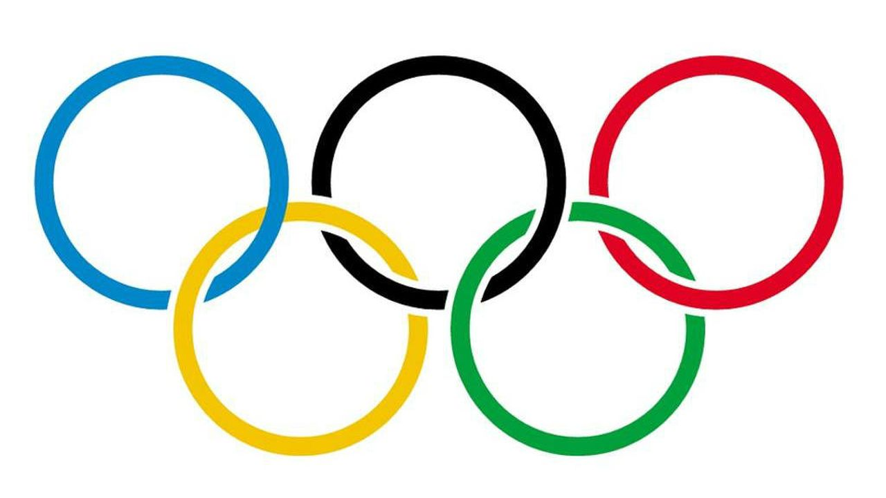

La natación es la habilidad que permite al ser humano desplazarse en el agua, gracias a la acción propulsora realizada por los movimientos rítmicos, repetitivos y coordinados de los miembros superiores, inferiores y el cuerpo, y que le permitirá mantenerse en la superficie y vencer la resistencia que ofrece el agua para desplazarse en ella.
Nadar resulta generalmente mejor para el cuerpo que los ejercicios de tierra, ya que la capacidad natural de flotar en el agua ayuda a evitar los inevitables golpes que pueden provocar lesiones.
En el agua, el peso de una persona es aproximadamente el 10% de su peso normal, y el margen de movilidad es mucho mayor, sobre todo para las personas que más necesitan ponerse en forma y tienen limitada su movilidad ya que el agua soporta el peso de los miembros.
Por lo tanto, es una buena elección para los que quieren hacer ejercicio, y pudieran tener problemas con la práctica de ejercicios en tierra. Por ejemplo, nadar puede ser ideal para embarazadas, para aquellos que sufren artritis, o para quienes padecen problemas de espalda y de peso.
|  |
|
|
|
|
|